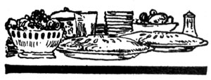

Reprinted by permission from Successful Farming, copyright 1914, Meredith Corporation. All rights reserved.
Fruit trees in the orchard or anywhere about the home may be made to bear a much larger crop of fruit, and much finer specimens, if the trees are properly treated with fertilizers and given the attention they need to produce a healthy and vigorous growth.
May is the best time to apply the fertilizer, and it makes no difference how old the tree is, the application should be given, and the results will be plainly seen. Those who have made a careful study of this method of invigorating fruit trees declare there is a great difference seen when certain trees or rows of trees are not treated and stand in the same orchard on similar land to that on which the other trees stand. It is not a costly experiment, and will bring the fruit grower immense returns. One application will do good but it is best to keep it up each year for a period of at least three years, before a year is allowed to pass without fertilization, and then it should not be discontinued for more than a year at a time.
Trees large enough to bear should be given the following: five pounds of nitrate of soda, five pounds of acid phosphate, and two and a half pounds of muriate of potash, making twelve and one half pounds of the mixture to the tree.
A less quantity of the same mixture may be given a tree not old enough to bear fruit, judgment being used in the amount according to the size and vigor of the tree.
In applying this fertilizer the party should walk round the tree taking care to keep three or four feet farther from the trunk than the ends of the longest branches as they spread out over the soil.
Sow the mixture, throwing it in toward the tree, but allowing the most of the fertilizer to fall nearest the point where you pass round the outer circle. It is not essential that any fall on the ground nearer than three or four feet from the body of the tree.
The smaller roots will collect the strength and carry it to every portion of the tree. It is well to sprinkle the fertilizer on the surface just previous to a shower. The rain will dissolve it and it will immediately go into the earth.
If the trees have been mulched it is not necessary to remove this to apply the mixture, but simply scatter on top of the litter and the rains will soon carry its strength to the soil beneath the mulching material. -J. T. T., Ohio.
As soon as trees arrive they should be unpacked and if they show any signs of being shriveled, should be "heeled" in moist dirt for several days before setting. When roots and bodies look plump and healthy, a little moist hay or grass thrown over them until time for setting will keep them in good condition.
Cut off all broken or bruised roots before putting the tree into the ground. Prune the tops until the limbs present a symmetrical head. Cut the limbs away about one-half and leave the last bud on the outside as this will form a better head.
Be sure to set the tree in line with the others and as nearly perpendicular as possible. The roots should have plenty of room. They should not be twisted together or wound in a circle. Make the hole plenty large enough to accommodate the roots without cramping or the tree will be seriously handicapped.
Tamp the soil thoroughly about the roots. When the hole lacks an inch or two of being filled, pour in a couple of buckets of water. This will settle the soil well around the roots and furnish the needed moisture. Cover with loose dirt and leave a soil mulch a couple of inches deep about the base of the tree.-W. D. N.
Seed-bed preparation is the leading thought in every farmer's head just now. Some ask an agricultural editor or some other wise man how they can best fit their stalk ground for oats or a little later their plowing for corn. Noman can correctly answer that question without knowing the field, its past treatment, and the season. Then sometimes it is hard to tell. About all the seed-bed advice that can be given is the kind of a seed-bed to be kept in mind as the ideal. It is then left to the individual to work out for himself the best method of bringing his field as nearly as possible to that standard. There is a world of difference in the way a field works up in different seasons. This is especially true of the field in which the humus matter is low. The field that contains plenty of humus can be put into good seed-bed condition almost any time.
Cross fences all through the fields are an abomination. Some permanent fences we must have, and we want them permanent too, but there are too many field fences wasting good ground. Father was visiting in Michigan last year and he tells of farms there fenced off in five to ten acre fields with rail fences. What a waste of land and a growth of weeds those must incur. Even a wire fence through the field is almost a snug harbor for weeds and insects. I like the plan of having the work land in one big field and then, as the harvesting and pasturing of the crops require, put up temporary fences. I believe the time saved in cultivating and plowing will care for the building of such fences.
"Here is my pastime," said a husky young farmer as he handed me a package of flower seeds to examine. I noticed sweet peas, pansies and a list of the other old favorites. "I plant these in the garden" he said "in rows like the vegetables. You can't keep flower beds clean unless you put your whole time in on them. I want the most flowers possible for the time expended, so take this way." To me that man is both a practical man and a poet. He loves the beautiful and goes about to get it. His neighbors tell me that he grows the good things of life into his character in the same way.
Chicken Loaf -Boil three chickens until tender. Remove the bones and put the meat through a chopper, together with three stalks of celery and a small onion. Season with pepper and salt. Pack in a deep dish and pour over it the liquor in which the chicken was cooked. Let it stand in a cool place for several hours and then it is ready for use. This is very nice for the children's school dinner, sliced thin and laid between slices of bread and butter.
Rice and Potato Soup -Peel three large potatoes and chop them fine, add one-half cup of well washed rice, and boil until soft in two quarts of salted water. Season to taste, add a piece of butter (nut butter gives a fine flavor, and it should be rubbed to a cream with a few drops of water before adding to the soup), thicken with a small teaspoon of flour and just before taking from the fire, add a cup of sweet cream.
Eggs in Baked Potatoes -6 potatoes, 6 eggs, 5 tbsp. grated cheese, 6 tbsp. butter, 1/2 tsp. salt. Bake potatoes; when soft cut off the tops, remove half the insides, drop in one raw egg, sprinkle with salt, pepper, butter and cheese. Put back in the oven for five minutes.
An earthen dish of quicklime placed in closets will absorb moisture and act as a disinfectant. It is also said to keep away rats and mice.
Delicious dressing for spinach, or any kind of greens is made as follows: One cup vinegar, put on fire and while it is heating, mix one teaspoon each of salt, sugar, powdered mustard, and pepper; the two latter should be used according to their strength, generally the mustard should be used very heaping and the pepper very scant, even full. Stir these together dry, and add the yolks of three eggs, and after the paste is very smooth beat in one cup of thick sour cream. When vinegar boils put in the above mixture, and let come to a boil. Have ready the whites of the eggs beaten stiff and whisk them in the hot dressing, remove from fire, and put in a jar. This dressing will keep indefinitely. If too thick it may be thinned with a little milk or cream when used. This quantity will dress several salads, the number depends upon the size of the salad or mess of "greens."
Education will broaden a narrow mind, but there's no known cure for a big head. The best you can hope is that it will swell up and bust; and then, of course, there's nothing left.-G. H. Lorimer.
Binding a cloth, dampened with cold water, to the back of the head, is a means of stopping bleeding at the nose, the head being held up well to aid in the checking.
|
|
|
|
|
 |
|
|